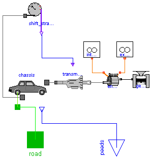

This package contains several "complete vehicle" models. These are models that combine the engine, transmission and chassis subsystems from the other parts of the 'SimpleCar' package into a complete vehicle.
SimpleCar.Vehicles.SportsCar
model SportsCar
"Vehicle model with the characteristics of a sports car."
Modelica.Mechanics.Translational.Interfaces.Flange_a road;
replaceable Chassis.SportsCarChassis chassis;
replaceable Engine.Components.I4_Engine engine(
spark_advance=20,
burn_duration=60,
evo=64,
ivo=165,
evc=190,
ivc=290);
Engine.SportsCarGeometry geometry;
Engine.Components.Reservoir intake_ambient;
Engine.Components.Reservoir exhaust_manifold;
Transmission.SportsCarTransmission transmission(k_on=2, k_off=6);
Transmission.SimpleShiftStrategy shift_strategy(tire_radius=0.35,
up_shift_schedule={30,60,80,95});
Modelica.Blocks.Interfaces.OutPort speed;
equation
connect(chassis.road, road);
connect(geometry.geom, engine.engine_geometry);
connect(exhaust_manifold.tap, engine.exhaust);
connect(transmission.engine, engine.crankshaft);
connect(transmission.driveline, chassis.power);
connect(chassis.wheel, shift_strategy.wheel);
connect(chassis.speed, speed);
connect(shift_strategy.gear_request, transmission.gear_selector);
connect(intake_ambient.tap, engine.intake);
end SportsCar;

This model brings together a complete vehicle model with an engine, transmission, shift strategy and chassis. The throttle of the vehicle is presumably controlled by an external "driver" model.
model PassengerCar "A sample passenger car model"
Modelica.Mechanics.Translational.Interfaces.Flange_a road;
replaceable Chassis.GenericCar chassis(vehicle_mass=1200) extends Interfaces.Chassis;
replaceable Engine.Components.I4_Engine engine(spark_advance=20, burn_duration=80)
extends Interfaces.Engine;
Engine.GeometrySource geometry(
bore=0.080,
stroke=0.080,
conrod=0.157);
Engine.Components.Reservoir intake_manifold;
Engine.Components.Reservoir exhaust_manifold;
replaceable Transmission.FiveSpeed transmission extends Interfaces.Transmission;
replaceable Transmission.SimpleShiftStrategy shift_strategy(tire_radius=0.35,
up_shift_schedule={10,20,30,40}) extends Interfaces.ShiftStrategy;
Modelica.Blocks.Interfaces.OutPort speed;
Engine.Components.Manifold intake_manifold1;
Modelica.Blocks.Interfaces.InPort throttle;
equation
connect(chassis.road, road);
connect(geometry.geom, engine.engine_geometry);
connect(exhaust_manifold.tap, engine.exhaust);
connect(transmission.engine, engine.crankshaft);
connect(transmission.driveline, chassis.power);
connect(shift_strategy.gear_request, transmission.gear_selector);
connect(chassis.wheel, shift_strategy.wheel);
connect(chassis.speed, speed);
connect(intake_manifold1.manifold, engine.intake);
connect(intake_manifold.tap, intake_manifold1.ambient);
connect(intake_manifold1.throttle_angle, throttle);
end PassengerCar;